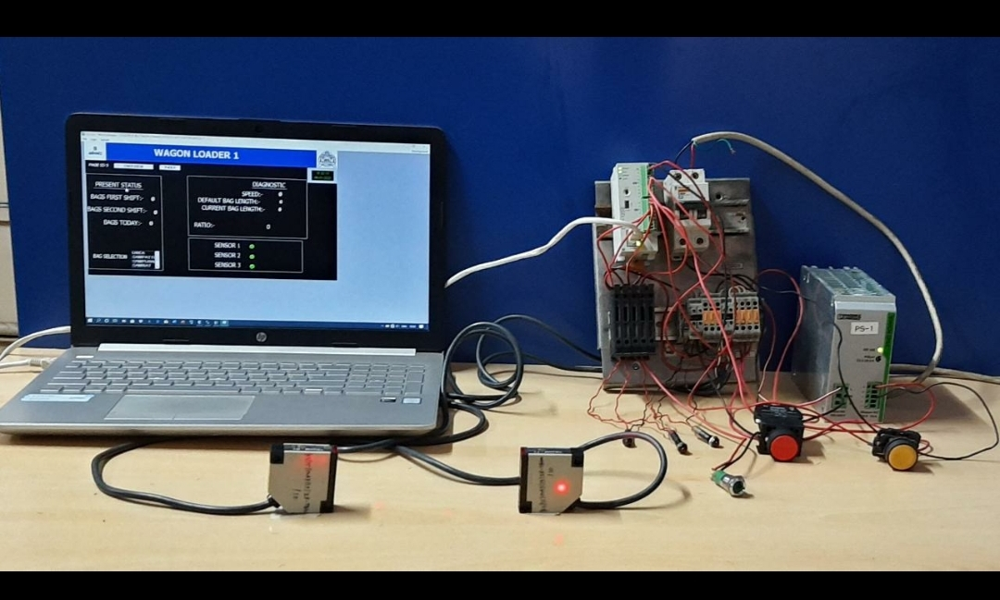
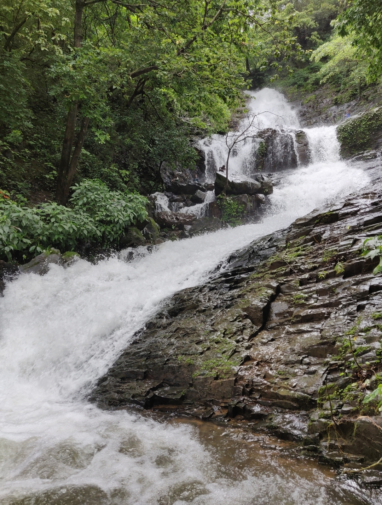

EDUCATION
- SSC
- HSSC
- B.E. Electonics & Telecommunication Engineering
L.D. Samant Memorial High School
St. Xaviers Higher Secondary School
Goa College Of Engineering
ABOUT ME
Hello there! I am Namrata Shetye, recent graduate from Goa College of Engineering. I have a very keen interest in industrial automation and to develope user friendly applicayions. I am also passionate about cooking and trekking.
WORKSHOPS ATTENDED
Workshops introduce you to the various new softwares and technologies, which intern developes ones interest in some of them. The various workshops that I had attended are:
- PLC Workshop
- 3D Printing and Designing
- Conventional AI with RASA
- Developement of Android / IOS Apps Using Web Technology
Here I learnt to program a PLC and also to wire different I/O devices to the plc. We even carried out small projects using plc.
This was a very interesting workshop, where I learnt to use Computer-Aided-Device CAD to create three dimentionl objects.
Here I was introduced to the artificial intelligence for the first time. we tried to build a chatbot with an open source machine learning frameworrk. We also created a library to train the chatbot.
PROJECT UNDERTAKEN
Final year project- REAL TIME MONITORING AND CONTROL FOR INDUSTRIAL AUTOMATION USING PLC
- The objective is to automate the existing conventional counting system of bags with the help of sensors and Programmable Logic Controller (PLC).It also aims to control the industrial process locally and to monitor, gather and process real time data using SCADA.
- The system also provides efficient database system that will store and manage large amount of data. 
Click HERE to know more.
HOBBIES
In my leisure time I like to do various things which gives me immense happiness.
- Trekking
- Cooking
- Craftwork
- Dance
I just love to visit various watrefalls and to trek down the whole route to see the natures beauty gives me inner peace.

I am happy when I am cooking.
In my leisure time I like to do scrapbooks and other craftwork using waste material.
I have taken 3 years of training in classical dance form Katthak.
CONTACT
namratashetye25@gmail.com
Porvorim, Goa 403501